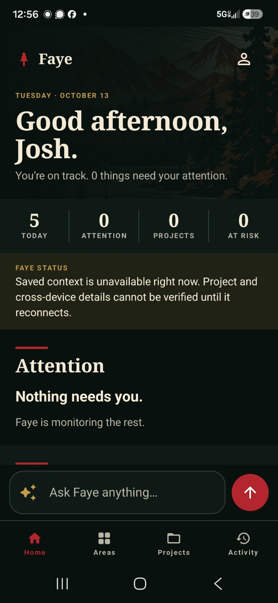

01
Enterprise learning systems
ECHO Academy
Operating and evolving a Docebo environment for a large dealer, service, sales and employee network.
View case study
My work sits where learning technology, instructional design, analytics, technical training and product thinking overlap. I’m most useful when the problem is bigger than a single course or tool.
Real systems, artifacts, decisions and outcomes.
Operating and evolving a Docebo environment for a large dealer, service, sales and employee network.
View case studyScenario-based technical troubleshooting built around complaint → symptom → diagnosis.
View case study
Tiered TF1 → TF2 → Master pathways with structured and assessment-based routes.
View case study
A functioning Android personal AI operating system focused on context, memory, governed action and clear state communication.
View case study
The work changes, but the through-line stays consistent: understand the operation, teach it clearly, then improve the system around it.
Classroom learning, teacher coaching, 1:1 devices and professional development.
Frontline service operations translated into onboarding and staff training.
Healthcare software training, LMS ownership and trainer management.
Docebo administration, reporting, certification, localization and learner experience.
Faye extends the same systems approach into personal software.
Learn how the complicated thing works, then figure out how to explain it, improve it, or represent it.